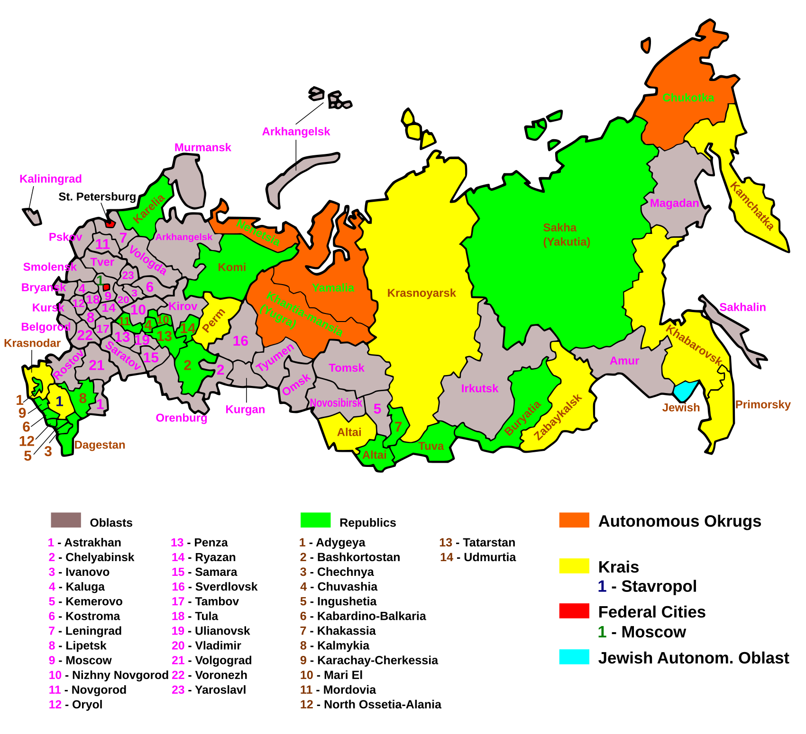

Росія значно переважає другу за площею країну світу (Канаду - 9,985 тис. км²).
Етнічні та релігійні дані відображають приблизні частки на основі останніх переписів та опитувань.
Країна, в економіці якої значну роль відіграють як промисловість (особливо видобувна), так і сільське господарство, при цьому сфера послуг займає найбільшу частку у структурі ВВП. Росія належить до цієї категорії, але з переважанням сировинного сектору.
Складна форма державного устрою, за якої адміністративно-територіальні одиниці (суб'єкти федерації) мають певну політичну та економічну самостійність. Російська Федерація складається з різних суб'єктів (республік, країв, областей).
Територія Росії, де зосереджена переважна більшість населення, найбільші міста, промислові потужності та розвинена транспортна мережа. Простягається трикутником, вершинами якого є Санкт-Петербург, Іркутськ та Астрахань.
Посилення ролі військово-промислового комплексу та збільшення частки військових витрат у структурі ВВП, а також орієнтація значної частини промисловості на виробництво військової продукції та її експорт.